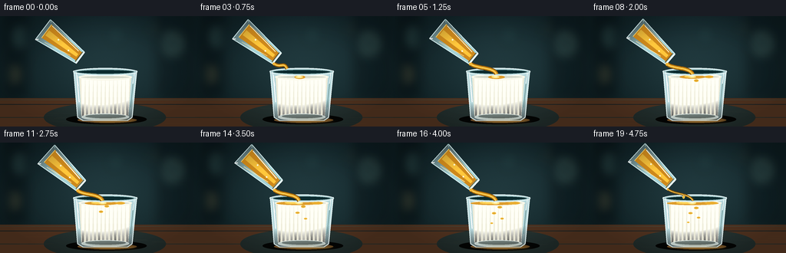
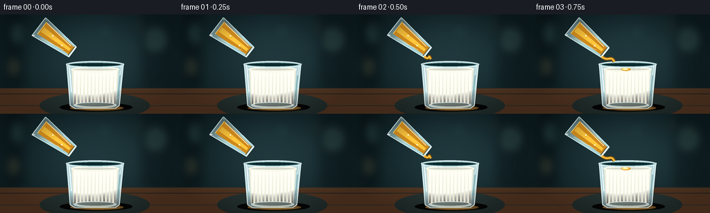

CODING AGENTS AS PIXEL WORLD MODELS
traex/GPT-5.6-Sol · material_0018
点击播放 · 原生 RGB 像素
逐轮保存的候选
回放视频、检查图与代码变化。
每份候选均可单独播放。实际图片检查记录在下方工具轨迹中。
候选 01播放与检查图
点击播放 · 原生 RGB 像素

展开代码变化
--- 上一保存版本
+++ 本次保存版本
@@ -0,0 +1,214 @@
+from pathlib import Path
+import math
+import numpy as np
+from PIL import Image, ImageDraw, ImageFilter
+import artifact_io
+
+W,H,N = 256,144,20
+S=4
+WW,HH=W*S,H*S
+rng=np.random.default_rng(1804)
+
+def sc(v): return int(round(v*S))
+def pts(seq): return [(sc(x),sc(y)) for x,y in seq]
+def ell(draw,box,fill,outline=None,width=1):
+ draw.ellipse(tuple(sc(v) for v in box),fill=fill,outline=outline,width=sc(width) if outline else 1)
+def line(draw,xy,fill,width=1,joint='curve'):
+ draw.line(pts(xy),fill=fill,width=max(1,sc(width)),joint=joint)
+def poly(draw,xy,fill,outline=None): draw.polygon(pts(xy),fill=fill,outline=outline)
+
+def bezier(draw,p0,p1,p2,p3,fill,width):
+ q=[]
+ for t in np.linspace(0,1,40):
+ u=1-t
+ q.append((u**3*p0[0]+3*u*u*t*p1[0]+3*u*t*t*p2[0]+t**3*p3[0],
+ u**3*p0[1]+3*u*u*t*p1[1]+3*u*t*t*p2[1]+t**3*p3[1]))
+ line(draw,q,fill,width)
+
+def base_background(frame):
+ y,x=np.mgrid[0:HH,0:WW]
+ # Deep blue-green kitchen, brighter around the subject.
+ glow=np.exp(-(((x/S-139)/105)**2+((y/S-61)/76)**2))
+ r=10+21*glow + 3*(y/HH)
+ g=25+30*glow + 4*(y/HH)
+ b=29+31*glow + 3*(y/HH)
+ noise=rng.normal(0,0.65,(HH,WW))
+ arr=np.stack([r+noise,g+noise,b+noise],axis=2).clip(0,255).astype(np.uint8)
+ im=Image.fromarray(arr,'RGB').convert('RGBA')
+ # Out-of-focus kitchen lights and vertical forms.
+ blur=Image.new('RGBA',(WW,HH),(0,0,0,0)); d=ImageDraw.Draw(blur)
+ d.rectangle((sc(9),0,sc(33),sc(105)),fill=(4,13,17,125))
+ d.rectangle((sc(207),0,sc(251),sc(106)),fill=(6,17,21,112))
+ for cx,cy,rad,col in [(28,27,10,(103,151,139,30)),(224,36,13,(125,162,143,25)),
+ (194,18,5,(246,195,100,37)),(18,76,7,(196,153,76,25)),
+ (151,24,14,(61,119,112,22))]:
+ d.ellipse((sc(cx-rad),sc(cy-rad),sc(cx+rad),sc(cy+rad)),fill=col)
+ blur=blur.filter(ImageFilter.GaussianBlur(sc(7)))
+ im=Image.alpha_composite(im,blur)
+ # tabletop
+ ov=Image.new('RGBA',(WW,HH),(0,0,0,0)); d=ImageDraw.Draw(ov)
+ d.rectangle((0,sc(107),WW,HH),fill=(76,48,30,255))
+ for yy,c in [(109,(121,82,49,120)),(115,(42,26,20,90)),(132,(130,80,41,50))]:
+ d.line((0,sc(yy),WW,sc(yy)),fill=c,width=sc(1))
+ # warm patch beneath glasses
+ d.ellipse((sc(57),sc(113),sc(216),sc(151)),fill=(187,117,52,20))
+ im=Image.alpha_composite(im,ov)
+ # slight tabletop texture
+ ov=Image.new('RGBA',(WW,HH),(0,0,0,0)); d=ImageDraw.Draw(ov)
+ for k in range(19):
+ yy=109+rng.random()*34; x0=rng.random()*235
+ d.line((sc(x0),sc(yy),sc(min(256,x0+8+rng.random()*36)),sc(yy+.15)),fill=(224,161,93,10),width=sc(.35))
+ return Image.alpha_composite(im,ov)
+
+def draw_milk_glass(im, frame):
+ d=ImageDraw.Draw(im,'RGBA')
+ p=frame/(N-1)
+ # contact shadow
+ ell(d,(86,128,191,141),(4,5,4,95))
+ ell(d,(101,132,178,139),(228,158,77,18))
+ # Glass body silhouette: subtly tapered and transparent.
+ body=[(96,71),(178,71),(172,132),(166,136),(108,136),(101,132)]
+ poly(d,body,(183,216,220,20))
+ # Milk body
+ milk_top=78.5-0.8*min(1,p*1.5)
+ poly(d,[(103,milk_top),(171,milk_top),(167,130),(162,133),(111,133),(106,130)],(239,237,218,242))
+ # milk soft vertical shading
+ for k in range(12):
+ x0=106+k*5.25
+ alpha=int(9+12*math.sin(k*.8)**2)
+ poly(d,[(x0,milk_top+2),(x0+4.8,milk_top+2),(x0+2.9,131),(x0+.8,131)],(255,255,246,alpha))
+ # glass bottom refraction
+ ell(d,(106,127,168,136),(220,236,230,80),outline=(239,250,245,95),width=1)
+ ell(d,(111,128,164,133),(161,180,174,24))
+ # surface and oil patch
+ ell(d,(102,milk_top-3,172,milk_top+5),(249,247,230,248))
+ ell(d,(104,milk_top-1.6,170,milk_top+3.8),(215,219,204,70),outline=(255,255,245,125),width=1)
+ amount=max(0,(frame-2)/15)
+ if amount>0:
+ cx=133.5+1.2*math.sin(frame*.35)
+ rw=5+29*min(1,amount)
+ # translucent floating oil, irregular overlapping lobes
+ ell(d,(cx-rw,milk_top-1.0,cx+rw,milk_top+3.5),(222,157,45,int(75+95*amount)))
+ ell(d,(cx-rw*.62,milk_top-.7,cx+rw*.15,milk_top+2.0),(255,213,91,int(90+95*amount)))
+ if frame>7:
+ ell(d,(150,milk_top-.6,158+8*amount,milk_top+2.7),(234,174,50,int(55+90*amount)))
+ # impact dimple/highlight
+ ell(d,(128.7,milk_top-.5,138.5,milk_top+2.5),(255,230,132,130))
+ ell(d,(131.0,milk_top,136.2,milk_top+1.2),(255,246,194,125))
+ # suspended oil pearls just below surface (oil/milk interaction)
+ if frame>5:
+ for j in range(min(4,(frame-4)//3)):
+ yy=84+j*7 + 1.2*math.sin(frame*.4+j)
+ xx=136+(-1)**j*(3+j*1.5)
+ rr=max(1.4,3.1-j*.45)
+ ell(d,(xx-rr,yy-rr*.55,xx+rr,yy+rr*.55),(226,167,50,100),outline=(255,214,93,120),width=.5)
+ # outlines/reflections last
+ line(d,[(96,71),(101,132),(108,136)],(224,243,244,155),1.15)
+ line(d,[(178,71),(172,132),(166,136)],(231,247,247,165),1.2)
+ line(d,[(108,136),(166,136)],(230,244,239,120),1)
+ line(d,[(100,77),(103,112)],(255,255,255,80),1.15)
+ line(d,[(174,78),(170,119)],(109,152,153,75),1)
+ # rim rings
+ ell(d,(95,67.5,179,77.5),(161,195,198,20),outline=(231,248,249,195),width=1.25)
+ ell(d,(99,69.4,175,75.7),(11,43,47,45),outline=(169,209,211,125),width=.75)
+ # strongest glass glints
+ line(d,[(99,73),(102,91)],(255,255,255,175),.75)
+ line(d,[(175,74),(173,88)],(255,255,255,110),.7)
+
+def vessel_geometry(frame):
+ # Gentle lowering/tilting motion, mouth remains over milk.
+ q=frame/(N-1)
+ mouth=np.array([104.5+1.7*q,54.2+1.7*math.sin(q*math.pi)])
+ angle=math.radians(37+5.5*math.sin(min(1,q*1.15)*math.pi/2))
+ # axis points back from mouth to vessel base
+ u=np.array([-math.cos(angle),-math.sin(angle)])
+ v=np.array([-math.sin(angle), math.cos(angle)])
+ base=mouth+u*61
+ return mouth,u,v,base
+
+def draw_oil_vessel(im,frame):
+ mouth,u,v,base=vessel_geometry(frame)
+ d=ImageDraw.Draw(im,'RGBA')
+ outer=[mouth+v*9.2,base+v*16.4,base-v*16.4,mouth-v*9.2]
+ # faint shadow/back glass
+ poly(d,[tuple(z) for z in outer],(165,210,214,26))
+ # oil clipped approximately to inner cup, rich amber body
+ inner=[mouth+u*3+v*7.0, base-u*3+v*13.1, base-u*3-v*13.1, mouth+u*3-v*7.0]
+ # oil polygon leaves an air pocket along upper edge and reads as liquid in tilted glass
+ oil=[mouth+u*3+v*6.1, base-u*5+v*9.5, base-u*5-v*12.0, mouth+u*3-v*6.8]
+ poly(d,[tuple(z) for z in oil],(206,137,28,205))
+ # amber gradient-like bands
+ band=[mouth+u*5+v*2, base-u*7+v*4, base-u*7-v*4, mouth+u*5-v*2]
+ poly(d,[tuple(z) for z in band],(255,199,60,85))
+ # air line / liquid meniscus at far base
+ a=base-u*5+v*9.6; b=base-u*5-v*12
+ line(d,[tuple(a),tuple(b)],(255,220,113,170),.8)
+ # Glass outer contours
+ line(d,[tuple(outer[0]),tuple(outer[1]),tuple(outer[2]),tuple(outer[3])],(219,244,245,175),1.05)
+ # base thick edge
+ line(d,[tuple(base+v*16.4),tuple(base-u*3+v*13.5)],(255,255,255,130),1.6)
+ line(d,[tuple(base-v*16.4),tuple(base-u*3-v*13.5)],(158,205,207,100),1.1)
+ # long bright reflection on top wall
+ line(d,[tuple(mouth+u*7-v*5.5),tuple(base-u*7-v*11.2)],(255,255,236,150),1.25)
+ line(d,[tuple(mouth+u*12+v*5.5),tuple(base-u*12+v*11.8)],(255,236,177,68),.7)
+ # mouth ellipse represented as oriented rim and inner opening
+ A=mouth+v*9.2; B=mouth-v*9.2
+ line(d,[tuple(A),tuple(B)],(239,253,248,205),2.0)
+ Ai=mouth+u*2.2+v*7.7; Bi=mouth+u*2.2-v*7.7
+ line(d,[tuple(Ai),tuple(Bi)],(106,78,28,130),1.0)
+ # tiny specular sparks
+ for off in [(-18,9),(-37,-8)]:
+ z=mouth+u*(-off[0])+v*off[1]*.2
+ ell(d,(z[0]-1,z[1]-1,z[0]+1,z[1]+1),(255,255,229,170))
+ return mouth,u,v
+
+def draw_stream(im,frame,mouth,u,v):
+ d=ImageDraw.Draw(im,'RGBA')
+ # Starts after a short establishing beat, fades at end.
+ if frame<2: return
+ grow=min(1,(frame-1)/4)
+ tail=1 if frame<17 else max(0.16,(20-frame)/3)
+ thick=(2.5+1.15*grow)*tail
+ start=mouth+v*7.2+np.array([0.4,0.8]) # lower lip
+ # destination on milk, with a natural slightly curved thread
+ end=np.array([134.2+0.7*math.sin(frame*.38),75.8])
+ # stream elongates in frames 2-4
+ end2=start+(end-start)*grow
+ wob=.7*math.sin(frame*.52)
+ p0=tuple(start); p1=(start[0]+7+wob,start[1]+7); p2=(end2[0]-4+wob,end2[1]-10); p3=tuple(end2)
+ # soft halo then amber core and white-gold edge
+ bezier(d,p0,p1,p2,p3,(115,75,14,55),thick+2.0)
+ bezier(d,p0,p1,p2,p3,(221,151,27,225),thick)
+ bezier(d,(p0[0]-.5,p0[1]),(p1[0]-.5,p1[1]),(p2[0]-.5,p2[1]),(p3[0]-.5,p3[1]),(255,220,104,215),max(.65,thick*.35))
+ # small neck/bead on lip
+ ell(d,(start[0]-thick*.52,start[1]-1,start[0]+thick*.52,start[1]+2.3),(242,181,55,225))
+ if frame>=18:
+ # breakup droplet as pouring slows
+ yy=64+(frame-18)*5
+ ell(d,(121,yy,124,yy+4),(242,181,50,220),outline=(255,225,126,150),width=.4)
+
+def render(frame):
+ im=base_background(frame)
+ # draw milk first so pouring vessel and stream sit naturally in front
+ draw_milk_glass(im,frame)
+ mouth,u,v=draw_oil_vessel(im,frame)
+ draw_stream(im,frame,mouth,u,v)
+ # localized warm caustic on table from oil/milk glass
+ ca=Image.new('RGBA',(WW,HH),(0,0,0,0)); cd=ImageDraw.Draw(ca)
+ ell(cd,(115,134,181,141),(251,184,67,18))
+ ca=ca.filter(ImageFilter.GaussianBlur(sc(2.2)))
+ im=Image.alpha_composite(im,ca)
+ # subtle vignette
+ yy,xx=np.mgrid[0:HH,0:WW]
+ dx=(xx-WW/2)/(WW/2); dy=(yy-HH/2)/(HH/2)
+ vig=np.clip((dx*dx+dy*dy-.35)*42,0,34).astype(np.uint8)
+ va=np.zeros((HH,WW,4),dtype=np.uint8); va[...,3]=vig
+ im=Image.alpha_composite(im,Image.fromarray(va,'RGBA'))
+ return np.array(im.convert('RGB').resize((W,H),Image.Resampling.LANCZOS),dtype=np.uint8)
+
+def main():
+ frames=np.stack([render(i) for i in range(N)])
+ artifact_io.save(frames,Path(__file__).resolve().parent)
+ print('saved',frames.shape,frames.dtype)
+
+if __name__=='__main__': main()
候选 02播放与检查图
点击播放 · 原生 RGB 像素


展开代码变化
--- 上一保存版本
+++ 本次保存版本
@@ -7,7 +7,6 @@
W,H,N = 256,144,20
S=4
WW,HH=W*S,H*S
-rng=np.random.default_rng(1804)
def sc(v): return int(round(v*S))
def pts(seq): return [(sc(x),sc(y)) for x,y in seq]
@@ -26,13 +25,15 @@
line(draw,q,fill,width)
def base_background(frame):
+ # Keep the set perfectly stable across frames; only the liquids and glass move.
+ rr=np.random.default_rng(1804)
y,x=np.mgrid[0:HH,0:WW]
# Deep blue-green kitchen, brighter around the subject.
glow=np.exp(-(((x/S-139)/105)**2+((y/S-61)/76)**2))
r=10+21*glow + 3*(y/HH)
g=25+30*glow + 4*(y/HH)
b=29+31*glow + 3*(y/HH)
- noise=rng.normal(0,0.65,(HH,WW))
+ noise=rr.normal(0,0.65,(HH,WW))
arr=np.stack([r+noise,g+noise,b+noise],axis=2).clip(0,255).astype(np.uint8)
im=Image.fromarray(arr,'RGB').convert('RGBA')
# Out-of-focus kitchen lights and vertical forms.
@@ -56,8 +57,8 @@
# slight tabletop texture
ov=Image.new('RGBA',(WW,HH),(0,0,0,0)); d=ImageDraw.Draw(ov)
for k in range(19):
- yy=109+rng.random()*34; x0=rng.random()*235
- d.line((sc(x0),sc(yy),sc(min(256,x0+8+rng.random()*36)),sc(yy+.15)),fill=(224,161,93,10),width=sc(.35))
+ yy=109+rr.random()*34; x0=rr.random()*235
+ d.line((sc(x0),sc(yy),sc(min(256,x0+8+rr.random()*36)),sc(yy+.15)),fill=(224,161,93,10),width=sc(.35))
return Image.alpha_composite(im,ov)
def draw_milk_glass(im, frame):
候选 03播放与检查图
可观测工具轨迹
实际执行的命令与返回图片。
命令 1exit 0
/bin/bash -lc "cat prompt.txt && printf '\\n---RULES---\\n' && cat GENERATION_RULES.md && printf '\\n---SPEC---\\n' && cat task_spec.json"
命令 2exit 0
/bin/bash -lc "find . -maxdepth 2 -type f -printf '%p\\n' | sort && printf '\\nTOOLS\\n' && command -v ffmpeg || true && command -v python3 || true && python3 - <<'PY' mods=['PIL','numpy','cv2','imageio','cairo','moviepy'] for m in mods: try: x=__import__(m); print(m,'OK',getattr(x,'__version__','')) except Exception as e: print(m,'NO',e) PY"
命令 3exit 0
/bin/bash -lc 'cat artifact_io.py'
命令 4exit 0
/bin/bash -lc "cat > generate.py <<'PY'
from pathlib import Path
import math
import numpy as np
from PIL import Image, ImageDraw, ImageFilter
import artifact_io
W,H,N = 256,144,20
S=4
WW,HH=W*S,H*S
rng=np.random.default_rng(1804)
def sc(v): return int(round(v*S))
def pts(seq): return [(sc(x),sc(y)) for x,y in seq]
def ell(draw,box,fill,outline=None,width=1):
draw.ellipse(tuple(sc(v) for v in box),fill=fill,outline=outline,width=sc(width) if outline else 1)
def line(draw,xy,fill,width=1,joint='curve'):
draw.line(pts(xy),fill=fill,width=max(1,sc(width)),joint=joint)
def poly(draw,xy,fill,outline=None): draw.polygon(pts(xy),fill=fill,outline=outline)
def bezier(draw,p0,p1,p2,p3,fill,width):
q=[]
for t in np.linspace(0,1,40):
u=1-t
q.append((u**3*p0[0]+3*u*u*t*p1[0]+3*u*t*t*p2[0]+t**3*p3[0],
u**3*p0[1]+3*u*u*t*p1[1]+3*u*t*t*p2[1]+t**3*p3[1]))
line(draw,q,fill,width)
def base_background(frame):
y,x=np.mgrid[0:HH,0:WW]
# Deep blue-green kitchen, brighter around the subject.
glow=np.exp(-(((x/S-139)/105)**2+((y/S-61)/76)**2))
r=10+21*glow + 3*(y/HH)
g=25+30*glow + 4*(y/HH)
b=29+31*glow + 3*(y/HH)
noise=rng.normal(0,0.65,(HH,WW))
arr=np.stack([r+noise,g+noise,b+noise],axis=2).clip(0,255).astype(np.uint8)
im=Image.fromarray(arr,'RGB').convert('RGBA')
# Out-of-focus kitchen lights and vertical forms.
blur=Image.new('RGBA',(WW,HH),(0,0,0,0)); d=ImageDraw.Draw(blur)
d.rectangle((sc(9),0,sc(33),sc(105)),fill=(4,13,17,125))
d.rectangle((sc(207),0,sc(251),sc(106)),fill=(6,17,21,112))
for cx,cy,rad,col in [(28,27,10,(103,151,139,30)),(224,36,13,(125,162,143,25)),
(194,18,5,(246,195,100,37)),(18,76,7,(196,153,76,25)),
(151,24,14,(61,119,112,22))]:
d.ellipse((sc(cx-rad),sc(cy-rad),sc(cx+rad),sc(cy+rad)),fill=col)
blur=blur.filter(ImageFilter.GaussianBlur(sc(7)))
im=Image.alpha_composite(im,blur)
# tabletop
ov=Image.new('RGBA',(WW,HH),(0,0,0,0)); d=ImageDraw.Draw(ov)
d.rectangle((0,sc(107),WW,HH),fill=(76,48,30,255))
for yy,c in [(109,(121,82,49,120)),(115,(42,26,20,90)),(132,(130,80,41,50))]:
d.line((0,sc(yy),WW,sc(yy)),fill=c,width=sc(1))
# warm patch beneath glasses
d.ellipse((sc(57),sc(113),sc(216),sc(151)),fill=(187,117,52,20))
im=Image.alpha_composite(im,ov)
# slight tabletop texture
ov=Image.new('RGBA',(WW,HH),(0,0,0,0)); d=ImageDraw.Draw(ov)
for k in range(19):
yy=109+rng.random()*34; x0=rng.random()*235
d.line((sc(x0),sc(yy),sc(min(256,x0+8+rng.random()*36)),sc(yy+.15)),fill=(224,161,93,10),width=sc(.35))
return Image.alpha_composite(im,ov)
def draw_milk_glass(im, frame):
d=ImageDraw.Draw(im,'RGBA')
p=frame/(N-1)
# contact shadow
ell(d,(86,128,191,141),(4,5,4,95))
ell(d,(101,132,178,139),(228,158,77,18))
# Glass body silhouette: subtly tapered and transparent.
body=[(96,71),(178,71),(172,132),(166,136),(108,136),(101,132)]
poly(d,body,(183,216,220,20))
# Milk body
milk_top=78.5-0.8*min(1,p*1.5)
poly(d,[(103,milk_top),(171,milk_top),(167,130),(162,133),(111,133),(106,130)],(239,237,218,242))
# milk soft vertical shading
for k in range(12):
x0=106+k*5.25
alpha=int(9+12*math.sin(k*.8)**2)
poly(d,[(x0,milk_top+2),(x0+4.8,milk_top+2),(x0+2.9,131),(x0+.8,131)],(255,255,246,alpha))
# glass bottom refraction
ell(d,(106,127,168,136),(220,236,230,80),outline=(239,250,245,95),width=1)
ell(d,(111,128,164,133),(161,180,174,24))
# surface and oil patch
ell(d,(102,milk_top-3,172,milk_top+5),(249,247,230,248))
ell(d,(104,milk_top-1.6,170,milk_top+3.8),(215,219,204,70),outline=(255,255,245,125),width=1)
amount=max(0,(frame-2)/15)
if amount>0:
cx=133.5+1.2*math.sin(frame*.35)
rw=5+29*min(1,amount)
# translucent floating oil, irregular overlapping lobes
ell(d,(cx-rw,milk_top-1.0,cx+rw,milk_top+3.5),(222,157,45,int(75+95*amount)))
ell(d,(cx-rw*.62,milk_top-.7,cx+rw*.15,milk_top+2.0),(255,213,91,int(90+95*amount)))
if frame>7:
ell(d,(150,milk_top-.6,158+8*amount,milk_top+2.7),(234,174,50,int(55+90*amount)))
# impact dimple/highlight
ell(d,(128.7,milk_top-.5,138.5,milk_top+2.5),(255,230,132,130))
ell(d,(131.0,milk_top,136.2,milk_top+1.2),(255,246,194,125))
# suspended oil pearls just below surface (oil/milk interaction)
if frame>5:
for j in range(min(4,(frame-4)//3)):
yy=84+j*7 + 1.2*math.sin(frame*.4+j)
xx=136+(-1)**j*(3+j*1.5)
rr=max(1.4,3.1-j*.45)
ell(d,(xx-rr,yy-rr*.55,xx+rr,yy+rr*.55),(226,167,50,100),outline=(255,214,93,120),width=.5)
# outlines/reflections last
line(d,[(96,71),(101,132),(108,136)],(224,243,244,155),1.15)
line(d,[(178,71),(172,132),(166,136)],(231,247,247,165),1.2)
line(d,[(108,136),(166,136)],(230,244,239,120),1)
line(d,[(100,77),(103,112)],(255,255,255,80),1.15)
line(d,[(174,78),(170,119)],(109,152,153,75),1)
# rim rings
ell(d,(95,67.5,179,77.5),(161,195,198,20),outline=(231,248,249,195),width=1.25)
ell(d,(99,69.4,175,75.7),(11,43,47,45),outline=(169,209,211,125),width=.75)
# strongest glass glints
line(d,[(99,73),(102,91)],(255,255,255,175),.75)
line(d,[(175,74),(173,88)],(255,255,255,110),.7)
def vessel_geometry(frame):
# Gentle lowering/tilting motion, mouth remains over milk.
q=frame/(N-1)
mouth=np.array([104.5+1.7*q,54.2+1.7*math.sin(q*math.pi)])
angle=math.radians(37+5.5*math.sin(min(1,q*1.15)*math.pi/2))
# axis points back from mouth to vessel base
u=np.array([-math.cos(angle),-math.sin(angle)])
v=np.array([-math.sin(angle), math.cos(angle)])
base=mouth+u*61
return mouth,u,v,base
def draw_oil_vessel(im,frame):
mouth,u,v,base=vessel_geometry(frame)
d=ImageDraw.Draw(im,'RGBA')
outer=[mouth+v*9.2,base+v*16.4,base-v*16.4,mouth-v*9.2]
# faint shadow/back glass
poly(d,[tuple(z) for z in outer],(165,210,214,26))
# oil clipped approximately to inner cup, rich amber body
inner=[mouth+u*3+v*7.0, base-u*3+v*13.1, base-u*3-v*13.1, mouth+u*3-v*7.0]
# oil polygon leaves an air pocket along upper edge and reads as liquid in tilted glass
oil=[mouth+u*3+v*6.1, base-u*5+v*9.5, base-u*5-v*12.0, mouth+u*3-v*6.8]
poly(d,[tuple(z) for z in oil],(206,137,28,205))
# amber gradient-like bands
band=[mouth+u*5+v*2, base-u*7+v*4, base-u*7-v*4, mouth+u*5-v*2]
poly(d,[tuple(z) for z in band],(255,199,60,85))
# air line / liquid meniscus at far base
a=base-u*5+v*9.6; b=base-u*5-v*12
line(d,[tuple(a),tuple(b)],(255,220,113,170),.8)
# Glass outer contours
line(d,[tuple(outer[0]),tuple(outer[1]),tuple(outer[2]),tuple(outer[3])],(219,244,245,175),1.05)
# base thick edge
line(d,[tuple(base+v*16.4),tuple(base-u*3+v*13.5)],(255,255,255,130),1.6)
line(d,[tuple(base-v*16.4),tuple(base-u*3-v*13.5)],(158,205,207,100),1.1)
# long bright reflection on top wall
line(d,[tuple(mouth+u*7-v*5.5),tuple(base-u*7-v*11.2)],(255,255,236,150),1.25)
line(d,[tuple(mouth+u*12+v*5.5),tuple(base-u*12+v*11.8)],(255,236,177,68),.7)
# mouth ellipse represented as oriented rim and inner opening
A=mouth+v*9.2; B=mouth-v*9.2
line(d,[tuple(A),tuple(B)],(239,253,248,205),2.0)
Ai=mouth+u*2.2+v*7.7; Bi=mouth+u*2.2-v*7.7
line(d,[tuple(Ai),tuple(Bi)],(106,78,28,130),1.0)
# tiny specular sparks
for off in [(-18,9),(-37,-8)]:
z=mouth+u*(-off[0])+v*off[1]*.2
ell(d,(z[0]-1,z[1]-1,z[0]+1,z[1]+1),(255,255,229,170))
return mouth,u,v
def draw_stream(im,frame,mouth,u,v):
d=ImageDraw.Draw(im,'RGBA')
# Starts after a short establishing beat, fades at end.
if frame<2: return
grow=min(1,(frame-1)/4)
tail=1 if frame<17 else max(0.16,(20-frame)/3)
thick=(2.5+1.15*grow)*tail
start=mouth+v*7.2+np.array([0.4,0.8]) # lower lip
# destination on milk, with a natural slightly curved thread
end=np.array([134.2+0.7*math.sin(frame*.38),75.8])
# stream elongates in frames 2-4
end2=start+(end-start)*grow
wob=.7*math.sin(frame*.52)
p0=tuple(start); p1=(start[0]+7+wob,start[1]+7); p2=(end2[0]-4+wob,end2[1]-10); p3=tuple(end2)
# soft halo then amber core and white-gold edge
bezier(d,p0,p1,p2,p3,(115,75,14,55),thick+2.0)
bezier(d,p0,p1,p2,p3,(221,151,27,225),thick)
bezier(d,(p0[0]-.5,p0[1]),(p1[0]-.5,p1[1]),(p2[0]-.5,p2[1]),(p3[0]-.5,p3[1]),(255,220,104,215),max(.65,thick*.35))
# small neck/bead on lip
ell(d,(start[0]-thick*.52,start[1]-1,start[0]+thick*.52,start[1]+2.3),(242,181,55,225))
if frame>=18:
# breakup droplet as pouring slows
yy=64+(frame-18)*5
ell(d,(121,yy,124,yy+4),(242,181,50,220),outline=(255,225,126,150),width=.4)
def render(frame):
im=base_background(frame)
# draw milk first so pouring vessel and stream sit naturally in front
draw_milk_glass(im,frame)
mouth,u,v=draw_oil_vessel(im,frame)
draw_stream(im,frame,mouth,u,v)
# localized warm caustic on table from oil/milk glass
ca=Image.new('RGBA',(WW,HH),(0,0,0,0)); cd=ImageDraw.Draw(ca)
ell(cd,(115,134,181,141),(251,184,67,18))
ca=ca.filter(ImageFilter.GaussianBlur(sc(2.2)))
im=Image.alpha_composite(im,ca)
# subtle vignette
yy,xx=np.mgrid[0:HH,0:WW]
dx=(xx-WW/2)/(WW/2); dy=(yy-HH/2)/(HH/2)
vig=np.clip((dx*dx+dy*dy-.35)*42,0,34).astype(np.uint8)
va=np.zeros((HH,WW,4),dtype=np.uint8); va[...,3]=vig
im=Image.alpha_composite(im,Image.fromarray(va,'RGBA'))
return np.array(im.convert('RGB').resize((W,H),Image.Resampling.LANCZOS),dtype=np.uint8)
def main():
frames=np.stack([render(i) for i in range(N)])
artifact_io.save(frames,Path(__file__).resolve().parent)
print('saved',frames.shape,frames.dtype)
if __name__=='__main__': main()
PY
python3 generate.py
ls -lh pixels.npz inspection.png index.html frames/00.png frames/19.png"命令 5exit 0
/bin/bash -lc "python3 generate.py && python3 - <<'PY'
from pathlib import Path
import numpy as np
from PIL import Image
z=np.load('pixels.npz')['pixels']
assert z.shape==(144,256,20)
assert len(list(Path('frames').glob('*.png')))==20
imgs=np.stack([np.asarray(Image.open(f'frames/{i:02d}.png')) for i in range(20)])
print('verified', imgs.shape, imgs.dtype, 'mean_abs_motion', float(np.abs(np.diff(imgs.astype(np.int16),axis=0)).mean()), 'range',imgs.min(),imgs.max())
PY"保存候选 3 份；完成命令 5 次；可验证图片返回 0 张。原始 API 响应与完整日志保留在本地。